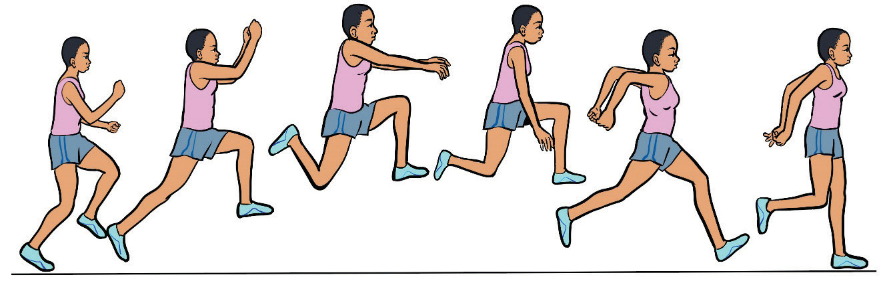
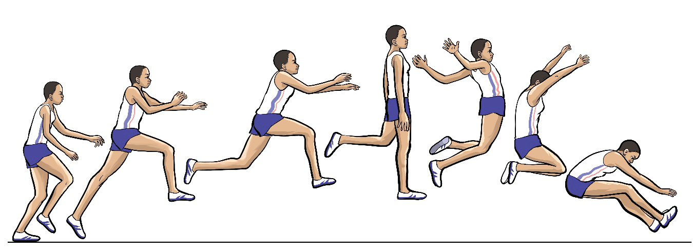

- (iv) Land with the free leg approximately in front of your centre of gravity;
- (v) Swing both arms backwards, keeping them close to the body during the second half of the flight; and
- (vi) Maintain an upright upper body and keep your eyes looking forward, Figure 2.29.
Figure 2.29: Steps in triple jump

a
b
c
d
e
f
Jump
The jump is the final stage of the triple jump, following the hop and step. Follow these steps to execute the jump effectively:
- (i) Swing up quickly the take-off foot to the horizontal position;
- (ii) Stretch the body with arms above the shoulders; and
- (iii) Bring the arms forward and down while legs forward and up to prepare for the landing, Figure 2.30.

a
b
c
d
e
f
g
Flight
The flight is the airborne stage that carries the athlete from the jump stage to landing. The key objective is to adopt a position in the air that allows for an efficient transfer
SPORTS STUDIES FORM TWO.indd 59
9/17/25 9:54 AM